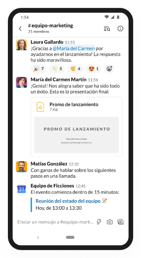
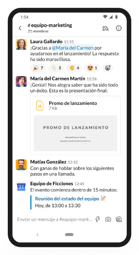

Connect the right people, find anything that you need and automate the rest. That’s work in Slack, your productivity platform.
 

Follow everything related to individual
topics, projects or teams in their
dedicated channels.
Projects ends, team change and slack
saves everything. Rather than trying to
remember, easily find what you are
looking for.
Keep clients, vendors or partners in the
loop by sharing a channel in Slack. Work
moves faster when conversation do too.